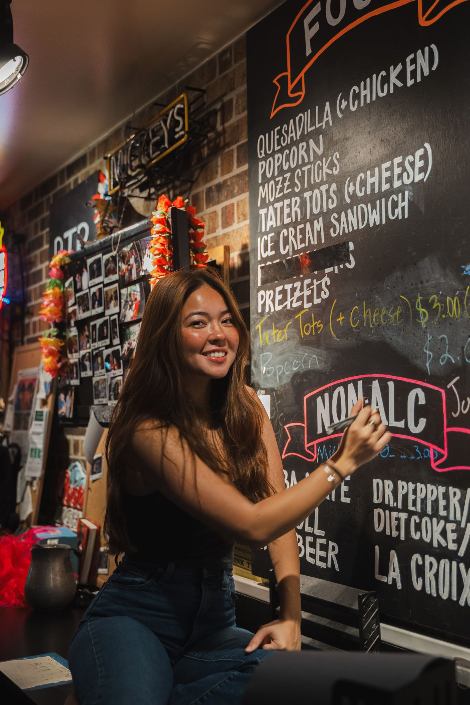
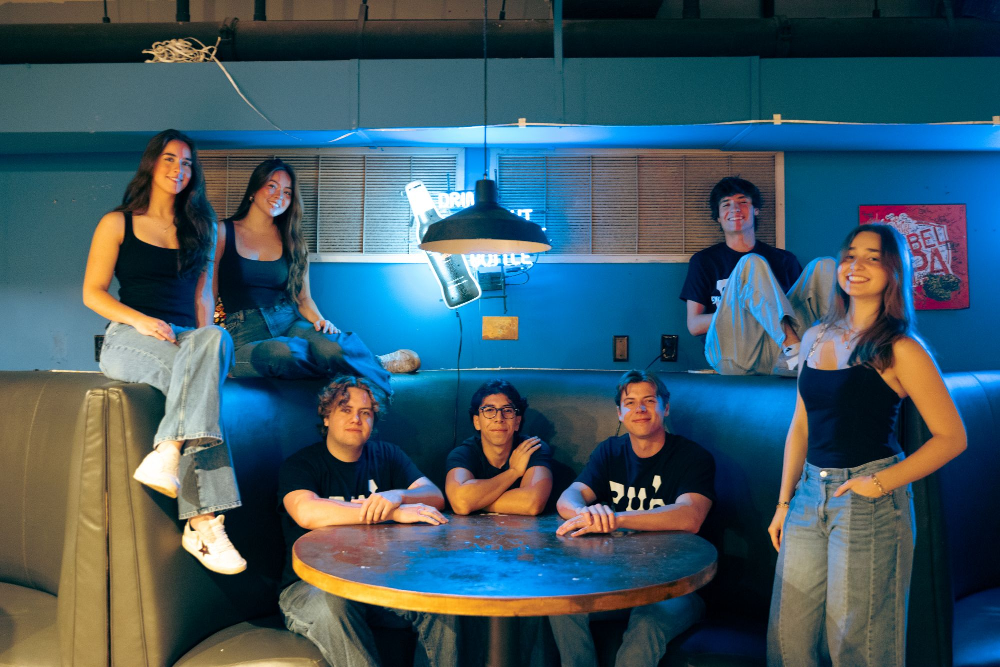
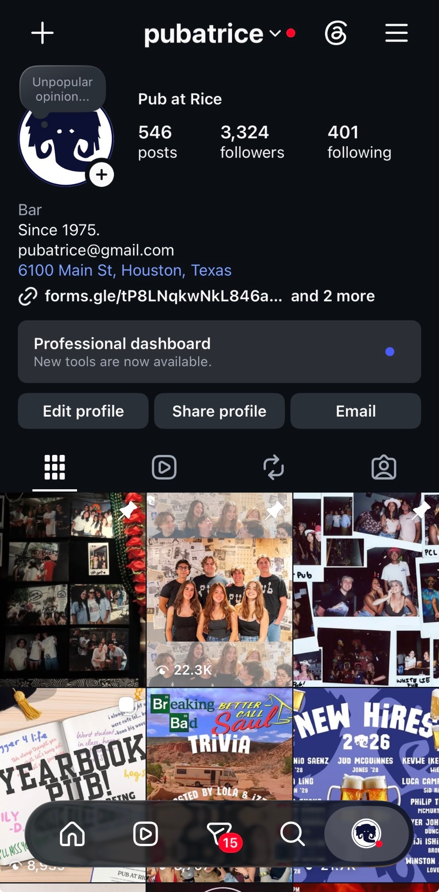

project page
the site, the instagram, and everything in between for one of the oldest student-run bars in the country.
pub is where the design habit started. i run marketing end to end: the instagram, event-themed content schedules, daily stories, and the brand's physical presence, from merch drops to hand-lettered menu boards. posts pull 112k+ monthly views and the following is up 18% year on year. then, because pub's whole personality lived on instagram and a printed menu, i designed and built its first real website myself, from the figma file down to the last hover state.
the trick with pub is that it can't ever look like it's trying too hard, even when i obviously am. i design on a near-daily cadence around events, on no budget, in one scrappy-but-intentional voice. the site stayed deliberately simple html and css so whoever runs pub after me can update it without needing me.


